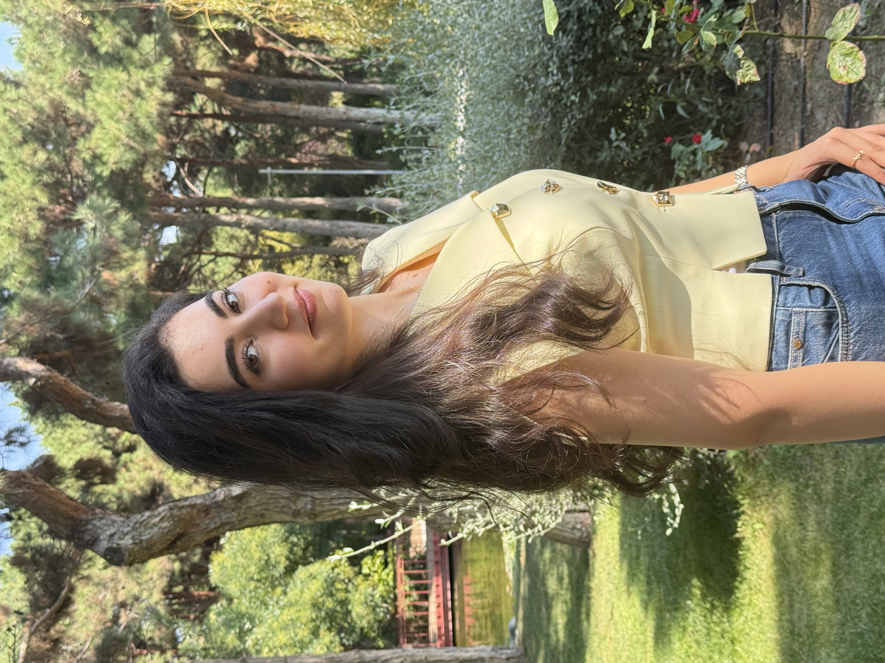
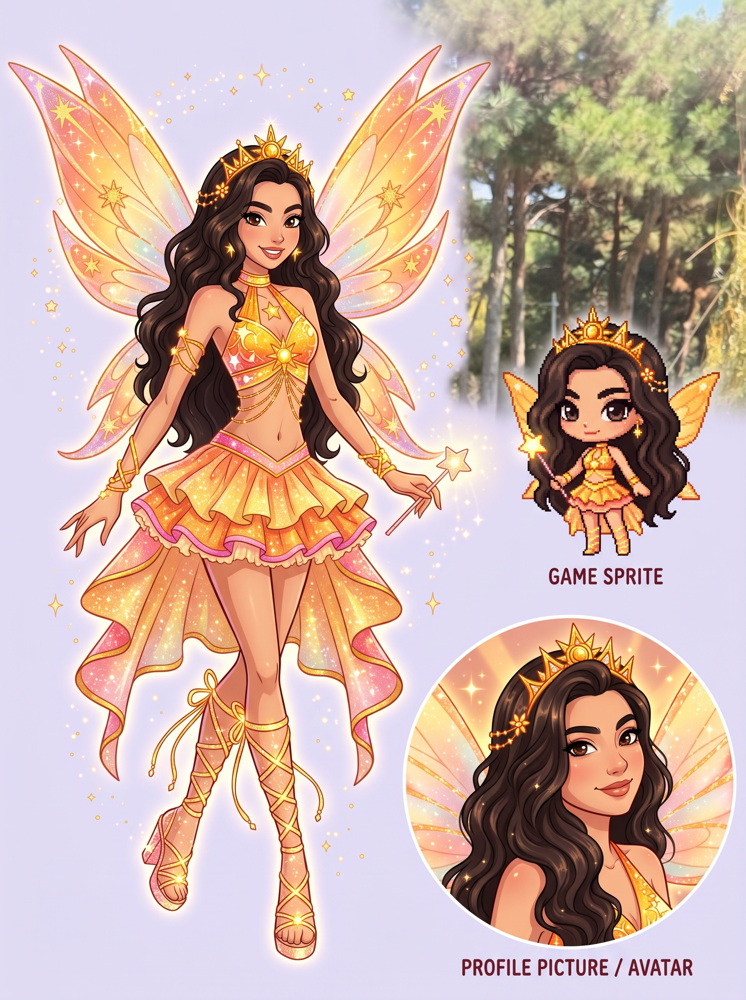

The person behind the sparkle
Me, in the real world
The fairy is my playful, star-powered alter ego. The photo is me—Turkan—bringing a little of that bright, creative energy into real life.
A little learning, a lot of becoming
Step through the starlight gate to see where I’m learning and what I’m dreaming up.
 TURKAN
TURKAN
Move with ← → or A / D · Click the glowing portal to visit projects
Next worldMy journey
No final form yet—and that’s the fun part. Here’s the path I’m building one quest at a time.


The person behind the sparkle
The fairy is my playful, star-powered alter ego. The photo is me—Turkan—bringing a little of that bright, creative energy into real life.
Where I’m learning
I’m a first-year student at ADA University and I’m also studying computer science through Holberton School’s nine-month program. I’m building my foundations through practice, projects, and collaboration.
What I’m exploring
I work with C, Python, Shell, HTML, and CSS, and use Git and GitHub to keep track of the journey. I’m especially interested in AI-powered tools and thoughtful web experiences.
Outside the code
Badminton gives me a reason to move; drawing gives my ideas somewhere to land. I bring a little of both energy and imagination into the things I build.